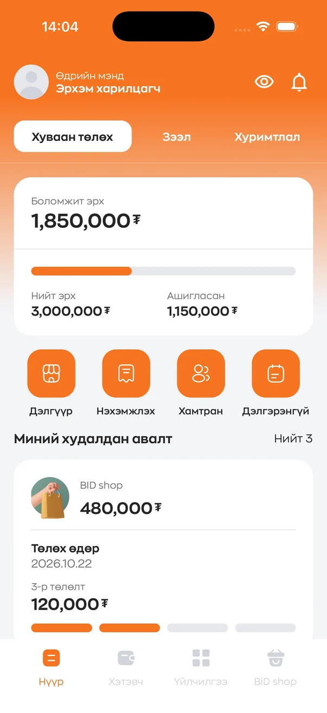

Each one drops the toy-like objects. They are working sketches at the same size, with placeholder wording, so you can compare the idea and not the polish.
What I found on your Facebook and Instagram: the pictures are ad graphics with text baked in and staff event photos, in BID's red and navy. The closest to a Toki-style image is the February 2025 set of women holding phones, but I can only reach it at 640 pixels with the ad text across it. Idea A uses a crop of one as a stand-in. To build A properly I need the original photos from that shoot, without text.
The Toki approach, kept light. A real person fills the right side and fades into the page; the payment card sits over the picture.
Хүссэн зүйлээ өнөөдөр аваад, төлбөрөө 4 хуваан төлөх апп.
Апп татахNo picture at all. One large amount splits into four payments in plain type, and the first one is paid. Quiet, confident, and nobody else locally does it.
Your real home screen in a phone that runs off the bottom of the frame, with the payment schedule beside it. What StorePay does further down its page, moved to the top.
Хүссэн зүйлээ өнөөдөр аваад, төлбөрөө 4 хуваан төлөх апп.
Апп татах